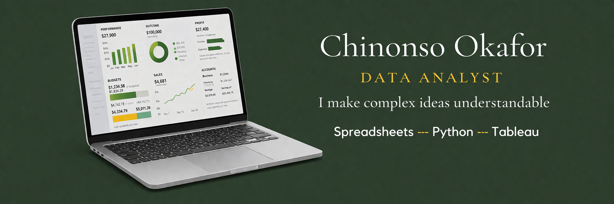
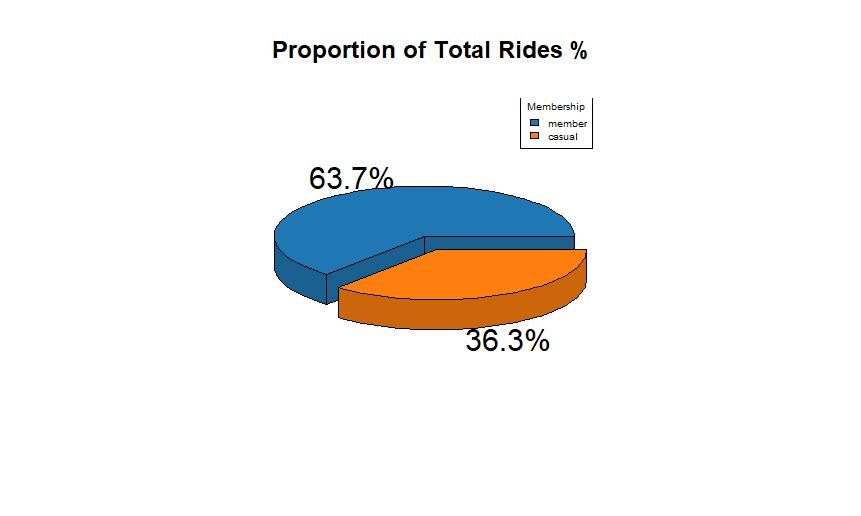

Data Analyst
B.Sc. Computer Science. Specialist in data integrity and analytical reporting.
I am a detail-oriented Data Analyst with a background in Computer Science. I thrive on turning messy datasets into clear, actionable stories.
Outside of technical analysis, I am a passionate Google Maps Local Guide. I enjoy documenting my surroundings and verifying locations—a hobby that mirrors my professional dedication to data integrity and documentation.


I used R to analyze over 5.7 million rows of data to identify how annual members and casual riders use Cyclistic bikes differently.